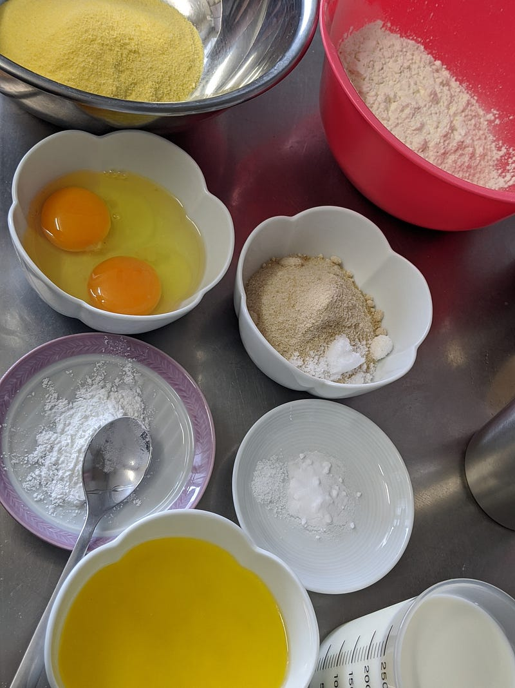
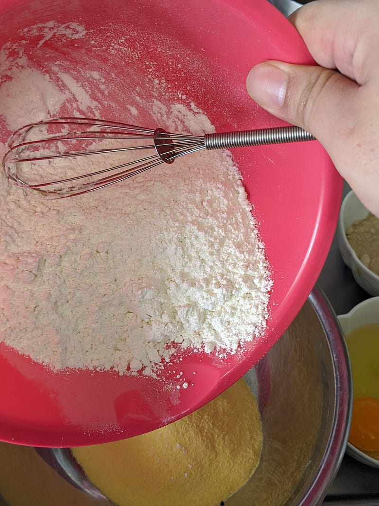
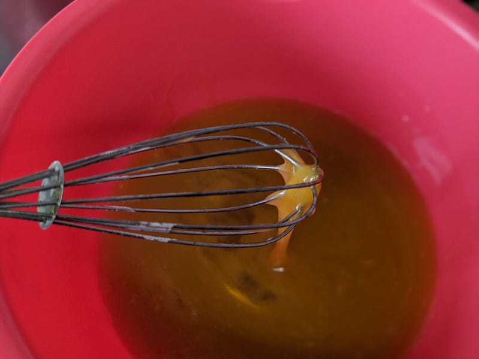
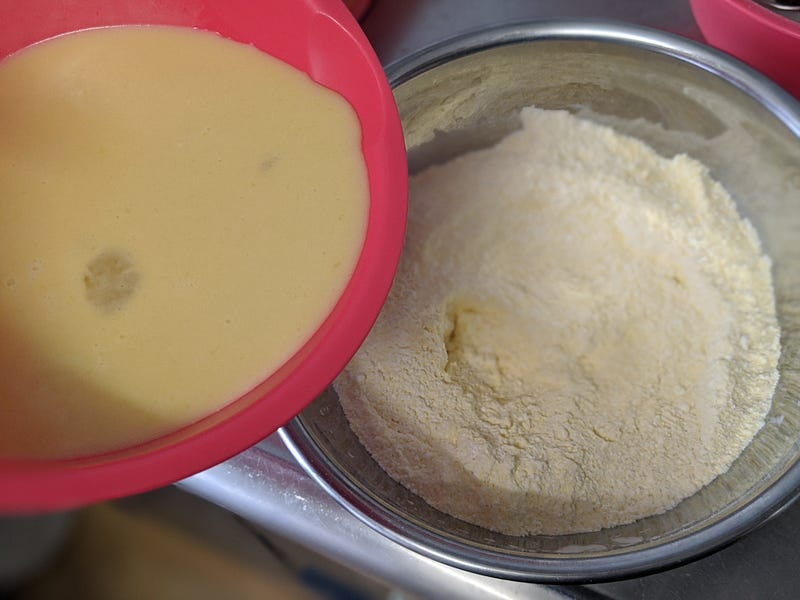
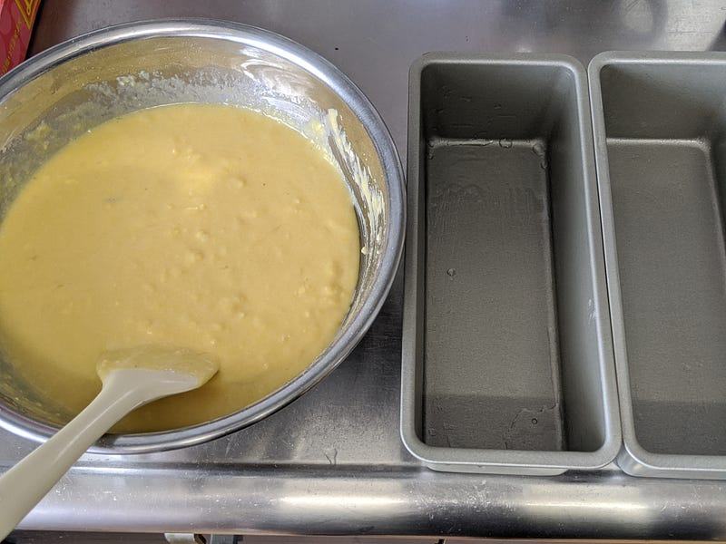
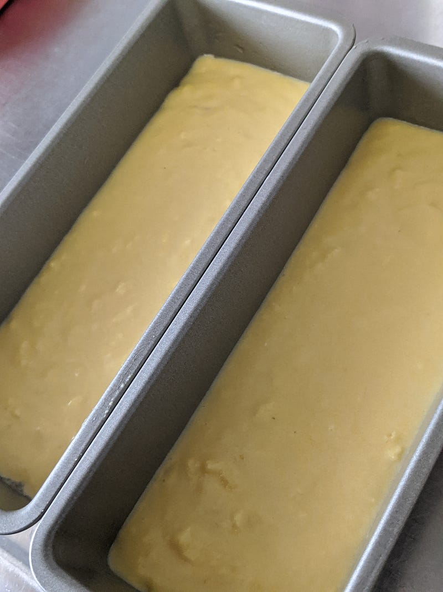
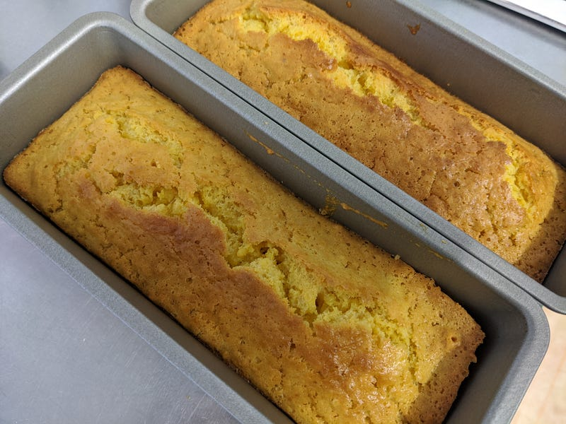
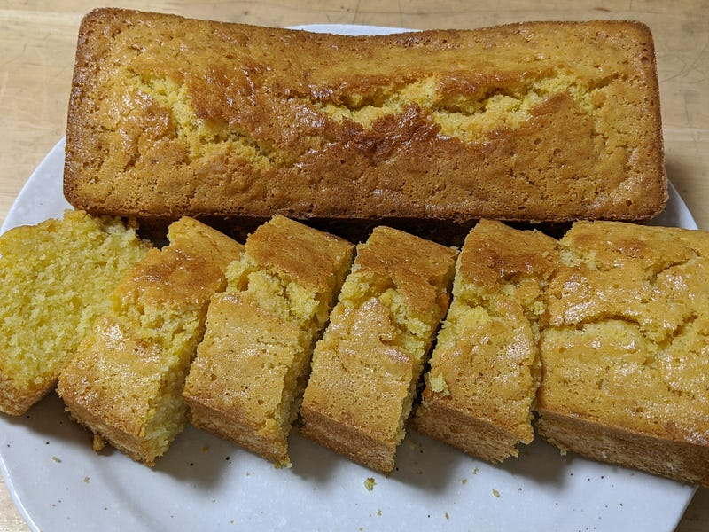
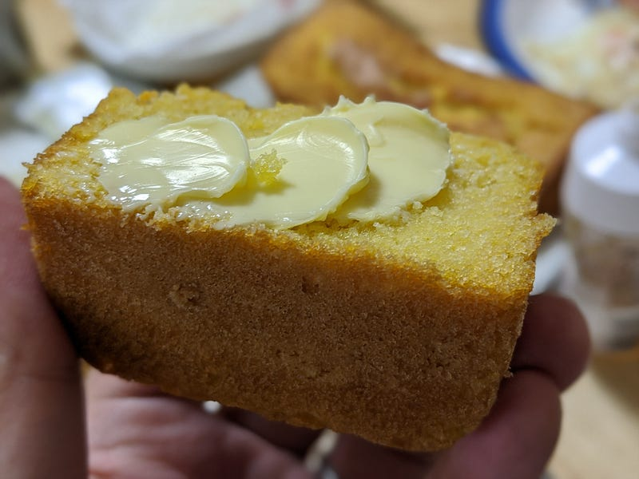

コーンブレッドを作る
コーンブレッドを作る
YouTubeを見ていたらメインの食材の横においてあったコーンブレッドがとにかくおいしそうに見えてしまって、たまらず作り方を調べ始めた、というのが今回の発端である。（その動画がどれだったかはもう忘れてしまった）
コーンブレッドの由来とかはよく知らないけど、アメリカ南部料理、BBQのつけあわせ、それにテックスメックス系の料理の付け合わせでよく出てくる気がする。
Alternative names Corn pone Type Quick bread Place of origin United States Region or state Southeastern United States…en.wikipedia.org
甘めの生地にうっすらコーンの香りをまとっていて、独特のホロホロとした食感が特徴だ。さらに言えば口中の水分を奪っていくので必ず飲み物を用意しておきたい。
これをホットケーキのようにスイーツのように食べることもあるが、大抵はふつうの食事の炭水化物として食べる。だからわりと普通の食卓に上がる食べ物だ。
アメリカから引っ越してきて以来もう長くこれを食べていない… それなら作るしかないのである。というわけで作る。
レシピを調べたところ、特殊な素材としてはコーンミールがあるだけであとは至極簡単に作れる。コーンミールも至極特別な食材というわけでもないのだが、日本ではあまり食べる習慣がないから製菓用品を販売している店で捜すのがてっとりばやそう。
今回は以下のレシピを使って調理していきます。
I was never a fan of cornbread until this recipe. After lots of recipe testing, I found the perfect ratio of…sallysbakingaddiction.com
今回の材料は
- コーンミール125g
- 薄力粉120g
- ベーキングパウダー約5g弱
- 料理用重曹2g強
- 塩少々
- 無塩バター115g
- 卵2個
- 牛乳220ml
- ブラウンシュガー（キビ砂糖）67g
自分はコーンミールとベーキングソーダ、そしてブラウンシュガーは富澤商店で調達した。Amazonで買うとなぜか数倍値段が高いから要注意な。
商品No.00941801 （6件） とうもろこしの胚乳のみを挽き割りにしました。コーンブレッドやイングリッシュマフィン等に。 名称 とうもろこし加工品 原材料名 とうもろこし（アメリカ） 保存方法(未開封)…tomiz.com
商品No.00216400 （8件） あと17時間16分以内のご注文で7月12日に出荷します。※諸事情により遅れることがございます。 この商品の別の規格 100g：缶入 アルミニウムフリーのベーキングパウダー。 名称…tomiz.com
商品No.00006001 （56件） さとうきび本来の持っているミネラルたっぷりのまろやかな粉末タイプの砂糖。 名称 カップ印 きび砂糖（日新製糖） 原材料名 原料糖 保存方法(未開封) 高温多湿を避けて保存…tomiz.com
重曹は食用とそうじゃないのとあるから、間違っても食用じゃないのを使わないで欲しい。念のため。
卵は家にあったのがSサイズ卵だったのと、アメリカの卵のほうがなんとなくでかそう、ということで元のレシピでは一個とあったのを二個にした。そのかわり牛乳の量を元のレシピから20mlほど減らした。

材料を揃えたら、まずオーブンを210℃に余熱しておく。そして、最後にタネを入れて焼く型の内側に軽く油を塗っておく。
今回は家にあったパウンドケーキ型を使ったが、キャストアイロンの深めのフライパンなどでやるとオーセンティックぽくって気分があがるかもしれない。
つぎにブラウンシュガーをのぞく粉類を均等に混ぜておく。

できたら、バターを溶かしたところにブラウンシュガーを入れてまぜる。次に卵。

全体がまざったら、こんどは粉類とまぜる。ダマとかはあまり気にしなくてOK。

全体がまざったら、型にいれる。

この時点でねっとりはしてるけど、まだわりと水分多め。

オーブンで20分。焼きあがったと思ったら串を刺して確認するのをお忘れなく。今回は最終的には30分焼いた。
焼き上がりがこれ

焼きあがったら20～30分待ってあら熱を取る。まだ少し温かいくらいで食べると絶妙においしい。
食べるときは最初に書いたようにわりとホロホロした食感なので、あまり薄く切ったりしないように。薄く切ると口に入れようとするそばから崩れていきます。理想は立方体です。

食べ方はお好きに。シロップ、蜂蜜、もしくはバターなどと。
マックグリドルをおいしいと思えるタイプの人は普通に甘いシロップをかけたこいつと、チリコンカンやBBQベイビーバックリブとかと食べるとよい。こいつをガンボみたいなスープな混ぜて食べてる人も見たことがある。
マックグリドル系の味がだめな人は、ホットケーキのように単体スイーツとして蜂蜜等をかけて楽しむとよい。
あとはマーガリンやバターをつけて、食パンの代わりとして食べるのがおすすめ。個人的には温かいコーンブレッドにバターをつけて、そのバターがとけつつあるタイミングで食べるのが好きです。

日本ではあまり一般的ではない食べ物だけど、特にクセのあるものでもないのできっと皆さん抵抗なく食べられると思う。
是非温かいうちに食べて、ほんのり甘いホロホロのコーンブレッドからシロップないしバターが溶けてくるのに舌鼓を打ちつつ、一番上の少し焦げたカリカリの部分から香ってくるコーンの香りを楽しんで欲しい。
ちなみに今回はわざわざアメリカの人のレシピを使ったのだが、それはなぜかといえば日本版のと材料の比率とかを比べてみるとどう考えても糖分とバターの量が少ないからである。いや、少なくてもそれで十分、とかそういうのはわかるんだが… それはコーンブレッドではないのか？と思い、今回はなるたけ忠実にアメリカ人レシピを再現してみた次第。
作ってはいないけど、前述の富澤商店には以下のようなレシピも載っているし、NHK「グレーテルのかまど」でも以前とりあげられた際のレシピもあるので、あっさりしてるほうが良い方はこちらをどうぞ。
岡部 加菜子 先生 ほんのり甘いコーンブレッド。コーングリッツが入っているので、ザラザラした食感を楽しめます。 忙しい朝にトーストして、バターを塗ってお召し上がり下さい。きっと朝から気分が盛り上がりますよ。…tomiz.com
～マーク・トウェインのコーンブレッド～より レシピ監修 エコール 辻 東京 大熊 恵 マーク・トウェインが愛したアメリカ南部式の素朴なコーンブレッドです。 スキレットを使ってアウトドア気分も楽しめます。…www.nhk.or.jp
ちなみに今回、多分20年近くぶりに食べました。おいしかった…